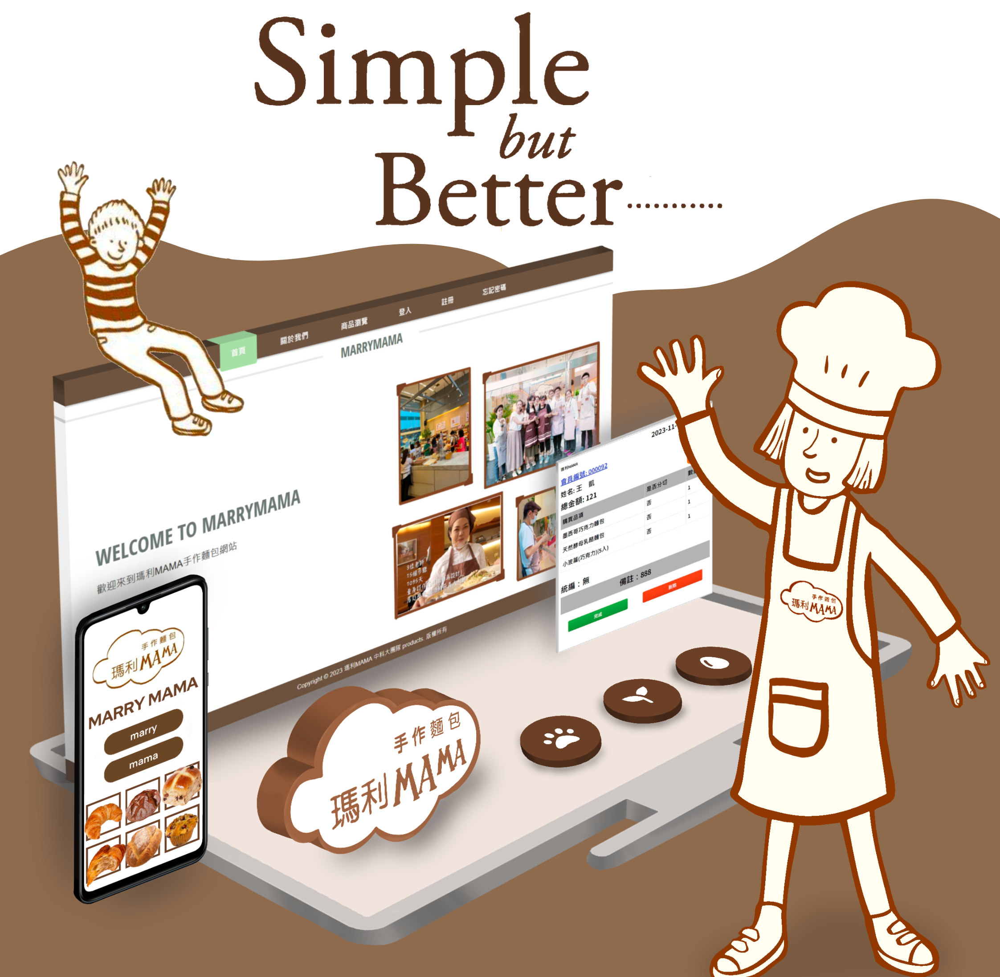
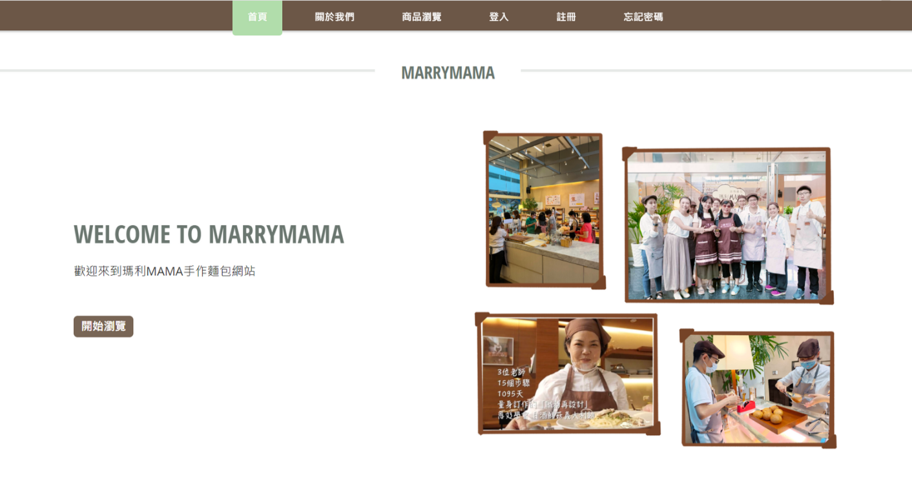
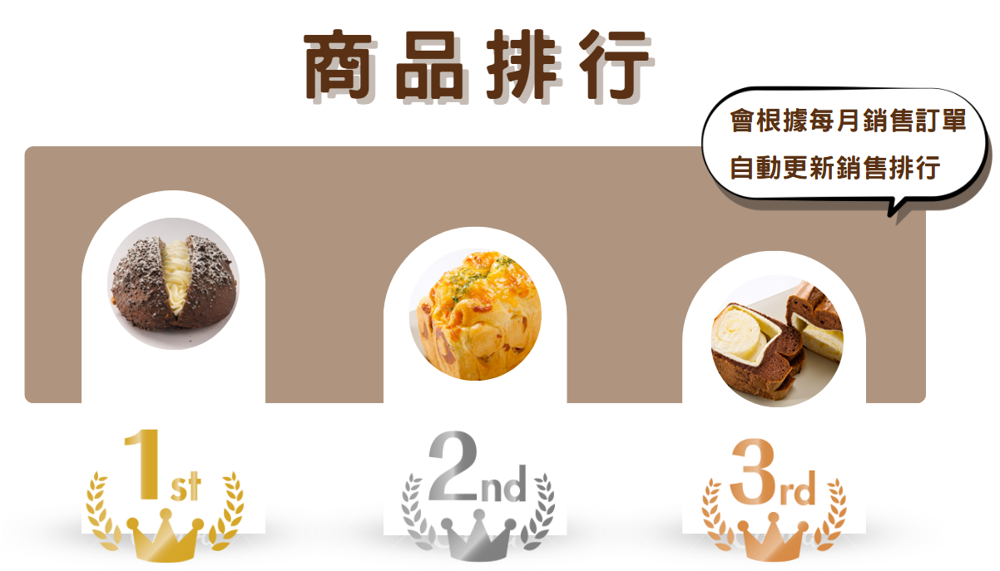

My Role
網站架構 & 美編
新功能開發
海報 & 計畫書
Client
瑪利亞社會福利基金會
Maria Social Welfare Foundation
Tools Used
VS Code · XAMPP
Photoshop · Procreate · Canva
SYSTEM_INTERFACE_V1

系統首頁介面
直觀的電子商務介面設計，讓訪客能快速找到所需的手作麵包，提升整體的購物與瀏覽體驗。
熱門商品排行榜
根據每月銷量自動更新熱門排名，協助管理者掌握銷售趨勢，並為顧客提供購買參考。
RANKING_FEATURE

地圖客製化圖標
整合 Google Maps API，並繪製了專屬的「瑪莉媽媽」客製化地圖圖標，增加品牌溫度與細節感。
Achievements
三個讓我驕傲的成果
-
01
實際售賣成果
網站上線後歷經兩次實際售賣活動，顧客能夠成功完成線上訂購流程， 工作人員的訂單整理時間大幅縮短，真正解決了原本的痛點。
-
02
自我突破與跨域學習
雖然就讀資管系，但程式碼編輯一直是我的弱項。 接下這個任務後，我在幾天內快速熟悉了開發環境， 最終能夠獨立開發功能。這次突破讓我對自己有了全新的認識。
-
03
Google Maps API 的一週攻克
Google Maps API 的整合比想像中複雜得多。我花了整整一週查資料、看影片、反覆測試， 最終完美地將地圖展示出來，還在上面加上了客製化圖標—— 這是我最深的成就感來源。